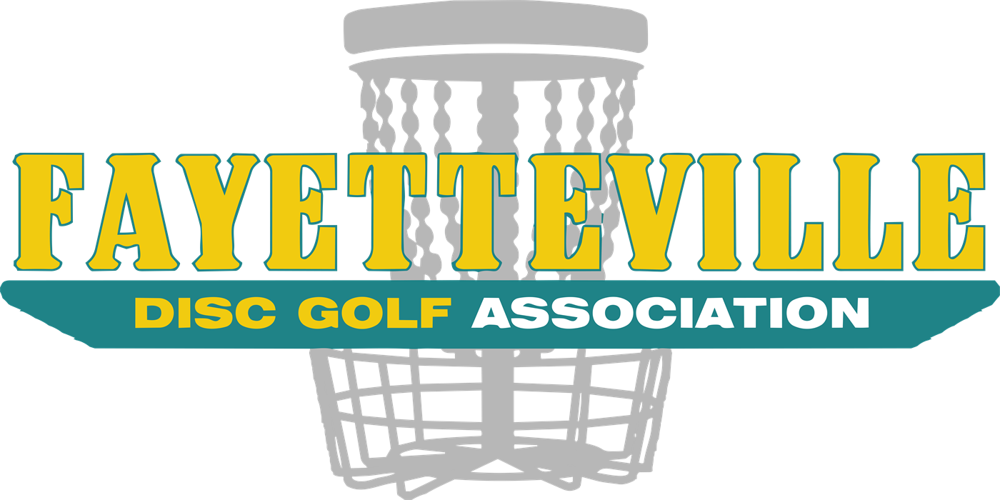
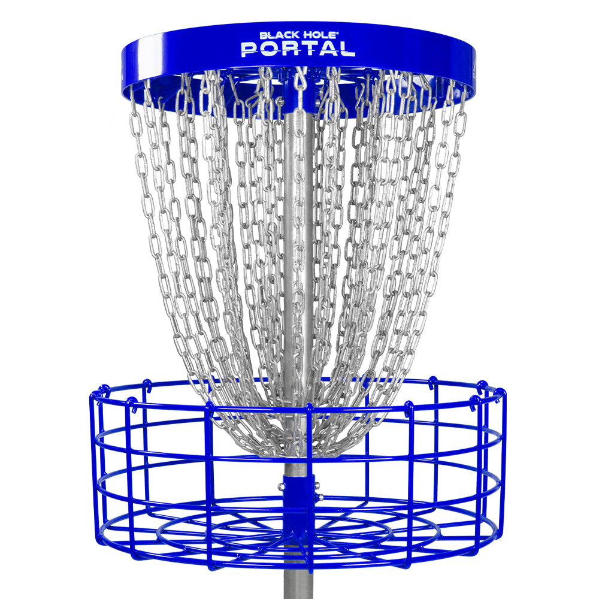
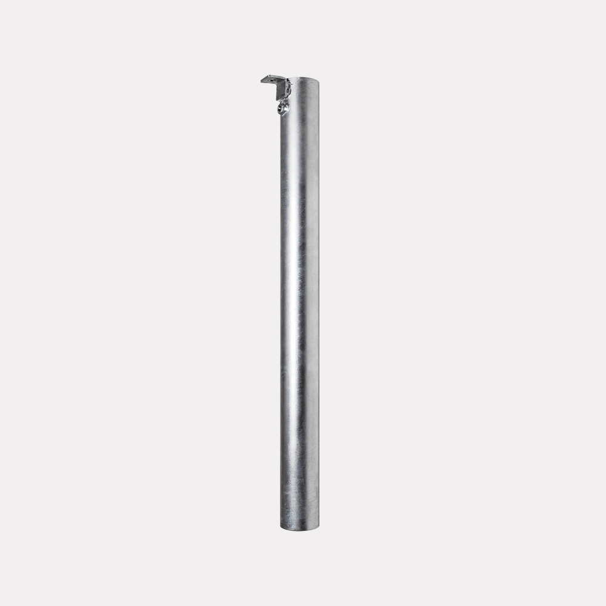
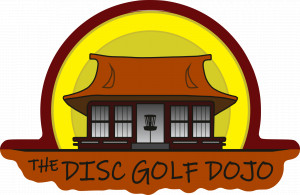
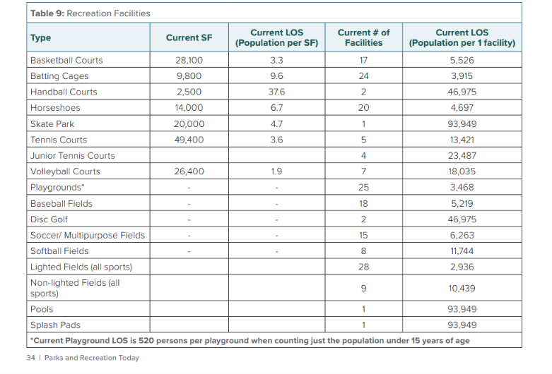
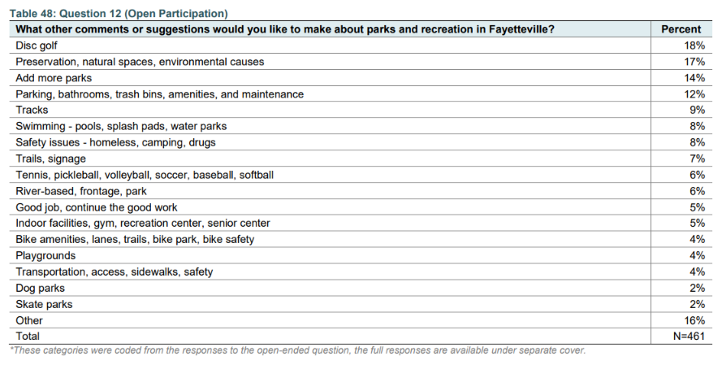
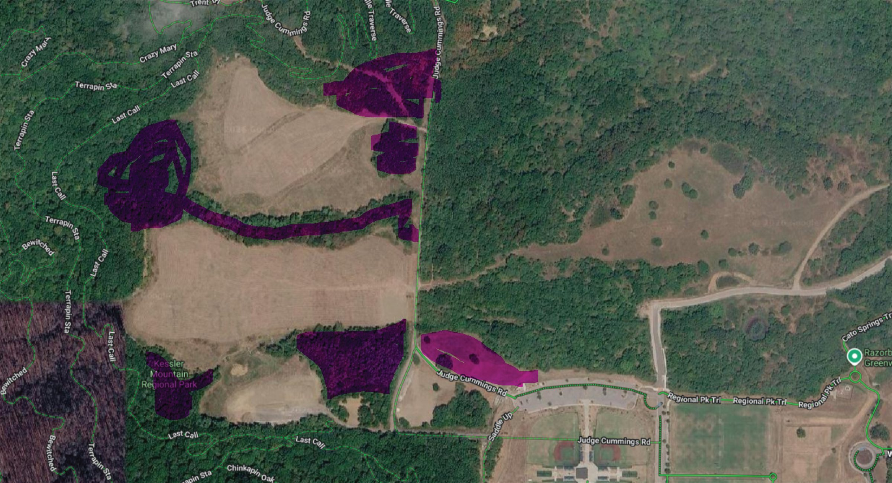
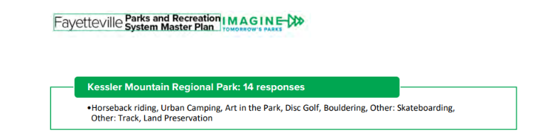

Through a member-funded capital campaign, FDGA has raised $18,538.94 for course improvements at Walker Park's Waxhaws Disc Golf Course — at no cost to the City. As a next phase, we're proposing a new course at Kessler Park that reuses the Walker Park baskets this upgrade replaces, built with volunteer labor.
Fayetteville Disc Golf Association is a 501(c)(3) nonprofit dedicated to growing disc golf in Fayetteville — maintaining public courses, running community tournaments, and providing programming for players of all skill levels. We do this work regardless of the outcome of this proposal; we're asking the City to partner with us in doing it better.
$18,538.94 raised from multiple FDGA member donations, earmarked for capital improvements at Walker Park's Waxhaws Disc Golf Course — facilitated entirely through FDGA, at zero cost to the City. Once installed, every new basket and sleeve is City property, just like the existing baskets.
| Item | Qty | Unit | Total |
|---|---|---|---|
| New baskets — MVP Black Hole® Portal18 hole baskets plus 1 practice basket | 19 | $799.95 | $15,199.05 |
| New hole positions — permanent ground sleevesHot-dipped galvanized steel | 11 | $39.99 | $439.89 |
| Extended tee padsConcrete work extending the existing Walker Park tee pads | — | — | $2,000.00 |
| New tee signsDesign and installation across the course | 18 | $50.00 | $900.00 |
| Campaign total | $18,538.94 |

A 4-ring, 36-chain catch system built to absorb both soft and firm putts. PDGA championship approved, with a 20-year warranty against rust and corrosion. High-visibility royal blue — easier for road traffic to spot and for new players to find.

Each sleeve lets a basket move between multiple permanent pin positions, so layouts can rotate through the year — keeping the course fresh for regulars and giving FDGA more flexibility for tournament layouts.

FDGA is sponsoring The Disc Golf Dojo — the same local outfit already contracted by the City for disc golf programming — to professionally design the new Kessler layout, at $1,000 per 9 holes, so it's built right the first time.
None of this is a new idea. The City's own 2023 Parks System Master Plan — built on years of resident survey data — already documents the need for more disc golf, in the City's own numbers and in residents' own words.
“Not enough disc golf courses. It feels too crowded.” Fayetteville resident, Master Plan survey — p. 342
“Crowded disc golf courses a problem that the disc golf community would solve with their own time and effort if only given an adequate property to develop.” Fayetteville resident, Master Plan survey — p. 336
All figures from the City's adopted Fayetteville Parks System Master Plan and Appendices, February 2023; page numbers as printed in the PDF.
The Plan counts 2 disc golf courses citywide today — 1 per 46,975 residents, one of the lowest-served facility types the City tracks. Its own 2040 gap analysis says Fayetteville needs 3 just to hold today's level of service as the city grows: a shortfall of at least one course, already.

In the Plan's open-participation survey (461 respondents), "disc golf" was the single most common topic in open-ended comments on what to improve — 18%, ahead of natural-space preservation, requests for more parks, and every other category.

We believe that by removing only invasive privet and honeysuckle — and cutting zero mature trees — we can create a Gold-level disc golf course at Kessler Park, reusing the City's existing Walker Park baskets once the Waxhaws upgrade replaces them. Nothing goes to waste.
FDGA has identified wooded areas of the park for the course. We don't know all of the City's plans for Kessler, but we're committed to working around them — the course will be laid out so that whatever the City has planned can still happen. We'd welcome the City's input on where a course fits best alongside those plans.
Fairways will be routed away from trails, pavilions, the sports fields, and parking, so players and other park visitors stay out of each other's way.
The purple highlighted areas on the map are the areas we'd like to use. They're open to the City's feedback before anything is finalized.

Great for locals, and worth the trip. A Gold-level course would be a great home for Fayetteville's current players and a welcoming place for new ones to grow into the sport — and it would make Kessler a course that players travel to. Visiting players and tournament fields stay in Fayetteville hotels, eat in local restaurants, and bring hotel tax revenue to the City along with them.
And a major is already on its way. The PDGA has chosen Northwest Arkansas to host the 2028 PDGA Tim Selinske United States Masters Disc Golf Championships — one of the sport's major championships, with Fayetteville named among the host cities. A Gold-level course at Kessler would put Fayetteville in position to welcome those players and the visitors who follow them, and to keep drawing events long after 2028. (PDGA announcement, Jan. 2026)
FDGA's Ice Bowl already brings players to Kessler Mountain. Every year, FDGA sets up a temporary course at Kessler for its Ice Bowl charity tournament. A permanent course would give that event, and others like it, a home.
In the City's own community engagement summary for the Master Plan, Disc Golf was named among the top requested uses for Kessler Mountain Regional Park specifically (14 responses, PDF p. 235).

Residents also asked for this siting approach: “Building and Development of Disc Golf Courses in non-flood plain areas so we can focus on ongoing development of fairways… without the constant setbacks due to flooding” (Master Plan survey, p. 321). That's exactly the wooded, non-floodplain site FDGA is proposing here.
FDGA volunteers will help clear the site and build the course.
FDGA volunteers will help clear invasive privet and honeysuckle along the Kessler fairways — zero mature trees cut. We'd walk the site with City staff before any work begins.
FDGA will help design and build the course with The Disc Golf Dojo — pouring the concrete tee pads, putting up tee signs, and installing the baskets.
We'll help it succeed. FDGA will help onboard new players at Kessler with intro clinics and course-launch events, and will keep the course clean with regular volunteer cleanup days — trash pickup, invasive removal, and basket upkeep — so it's a well-cared-for addition to the park, not another item on the City's list.
And over the long haul. FDGA will handle routine upkeep and lead fundraising for repairs and replacements as the course ages — baskets, signs, and tee pads — just as we've done with this campaign for Walker Park.
FDGA's $18,538.94 capital campaign for Walker Park: 19 new baskets, 11 new hole positions, extended tee pads, and new tee signage — installed by FDGA at no cost to the City.
Built by FDGA volunteers reusing the City's existing Walker Park baskets, sited around the City's plans for the park, with FDGA also sponsoring a professional course designer ($1,000 per 9 holes).
Once the City accepts the gift, FDGA installs the new baskets, sleeves, tee pad extensions, and signage, coordinated with Parks staff.
The Disc Golf Dojo finalizes a layout, which goes through the City's normal review and approval process before anything happens on the ground.
With approval in hand, FDGA volunteers prep the site and install the retired Walker Park baskets.
Prepared for Fayetteville Parks & Recreation ahead of our meeting — happy to walk through any part of this in person.